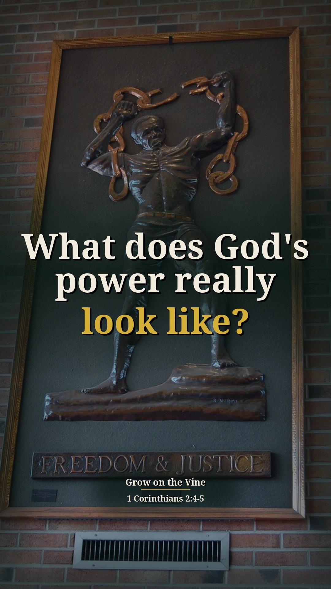
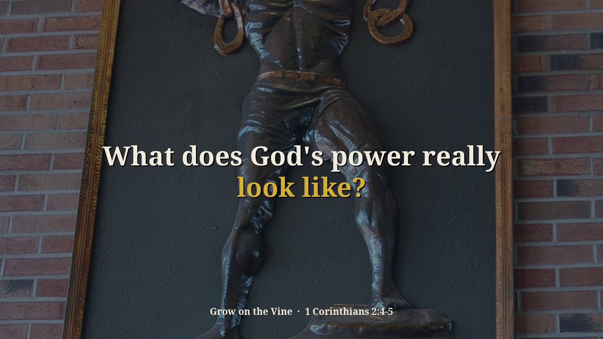
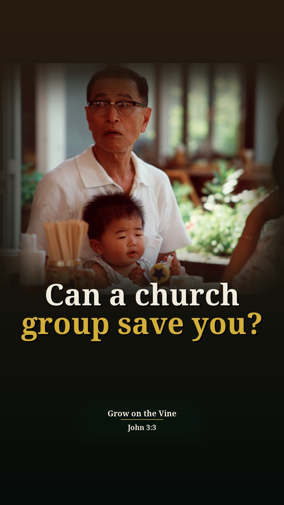
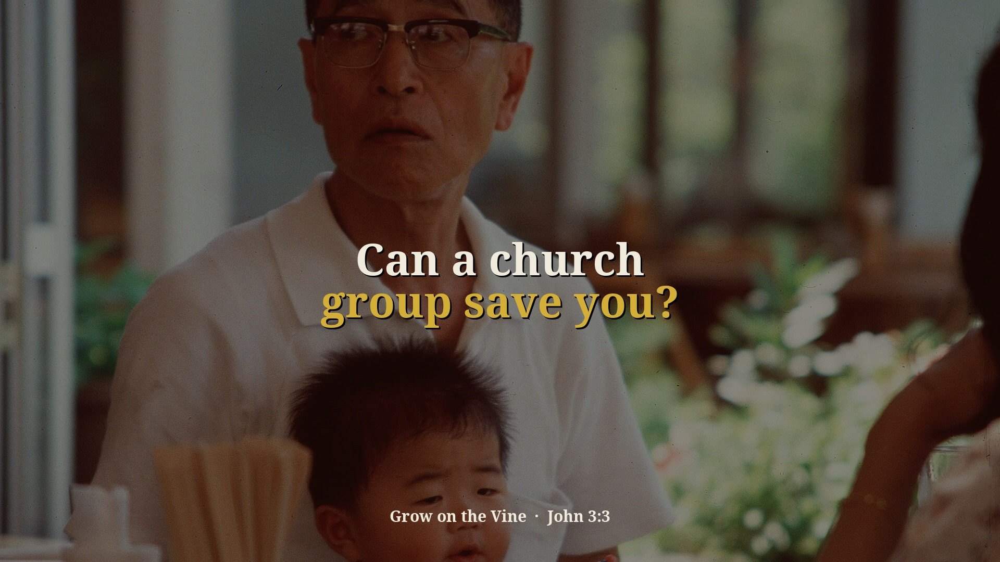
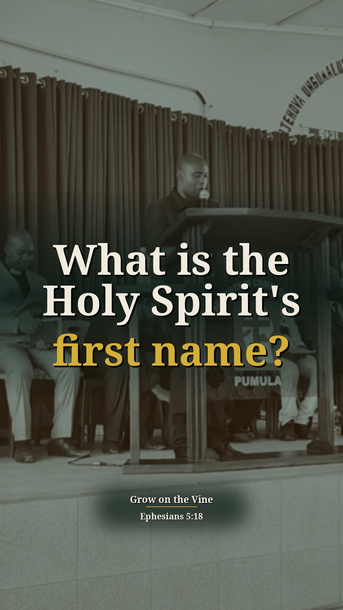
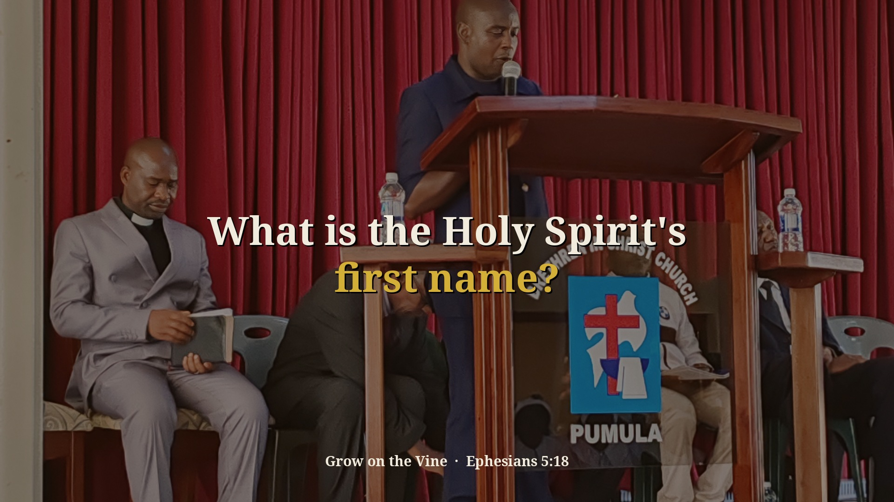

Division Part 2 — 3 new context Shorts (preview)
Preview only, not posted anywhere. Source: 6NKKxhLki6o · Pastor David G. Kincer. New Shorts from passages on sin and other religions that were skipped before. Each one includes the earlier or surrounding part of the sermon that explains why he says it. Each card follows the clip-page order: video → short answer → his words → Scripture (NKJV) → full message.
What does God's power really look like?
Context included: 3:53 he reads 1 Corinthians 2:4 ("in demonstration of the Spirit and of power") and says the demonstration so far is salvation and changed lives. That is why he lists what the Corinthians were changed from.
Watch the clip
Our short summary of this clip, not the preacher's exact words
Short answer: He says the power Paul talks about is the changed life: the Corinthians were changed from homosexuality, adultery, prostitution and all that debauchery, and that power of the spoken word, with Christ backing it up, is what changed him at the altar.
Why: 1 Corinthians 2:4: Paul preached in demonstration of the Spirit and of power, and the demonstration was changed lives.
“In demonstration of the spirit and power. So far, the only demonstration of the spirit and power we've seen is salvation and changed lives.”
▶ 4:01
“And so the demonstration of the power is what these Corinthians changed lives from homosexuality, adultery, prostitution, slavery, slave masters, all this debauchery that was going on.”
▶ 4:25
“The power he's talking about is the changed life.”
▶ 4:40
“And that's what changed me, folks. I went to that altar and I really experienced salvation.”
▶ 5:26
1 Corinthians 2:4-5 And my speech and my preaching were not with persuasive words of human wisdom, but in demonstration of the Spirit and of power, that your faith should not be in the wisdom of men but in the power of God.
1 Corinthians 6:9-11 Do you not know that the unrighteous will not inherit the kingdom of God? Do not be deceived. Neither fornicators, nor idolaters, nor adulterers, nor homosexuals, nor sodomites, nor thieves, nor covetous, nor drunkards, nor revilers, nor extortioners will inherit the kingdom of God. And such were some of you. But you were washed, but you were sanctified, but you were justified in the name of the Lord Jesus and by the Spirit of our God.
Full sermon: Division Part 2 — full message page


Other title options:
- Can the gospel change any life?
- Is a changed life the real miracle?
YouTube description (draft)
What does God's power really look like? Read the short answer, the Scripture (NKJV) and the pastor's own words: https://growonthevine.com/clips/what-does-gods-power-really-look-like/ To see the full message, click here: https://www.youtube.com/watch?v=6NKKxhLki6o&t=233s He says the power Paul talks about is the changed life: the Corinthians were changed from homosexuality, adultery, prostitution and all that debauchery, and that power of the spoken word, with Christ backing it up, is what changed him at the altar. 1 Corinthians 2:4-5 (NKJV) Pastor David G. Kincer · Grow on the Vine Music: "Crinoline Dreams" Kevin MacLeod (incompetech.com) Licensed under Creative Commons: By Attribution 4.0 License http://creativecommons.org/licenses/by/4.0/ #Shorts #Bible #Jesus
Can a church group save you?
Context included: 13:12 "he's trying to get them to focus on the power, not people, not ministers, not a group" (Paul in 1 Corinthians) sets up why he says no denomination can save you.
Watch the clip
Our short summary of this clip, not the preacher's exact words
Short answer: No. He says Catholics can't save you, Baptists can't, Pentecostals can't, Jews can't; only Jesus Christ can change you. Get your confidence off groups and ministers and onto Jesus and the cross, because there's no sin it can't forgive.
Why: Paul pointed the Corinthians to the power of the gospel, not to people or groups; you must be born again yourself (John 3:3).
“And he's trying to get them to focus on the power, not people, not ministers, not a group.”
▶ 13:12
“Catholics can't save you, Baptists can't save you, Pentecostals can't save you, Jews can't save you, they can't change you, Jesus Christ can't.”
▶ 13:38
“There's no sin, it can't forgive.”
▶ 14:26
John 3:3 Jesus answered and said to him, “Most assuredly, I say to you, unless one is born again, he cannot see the kingdom of God.”
1 John 1:9 If we confess our sins, He is faithful and just to forgive us our sins and to cleanse us from all unrighteousness.
Full sermon: Division Part 2 — full message page


Other title options:
- Does God have grandchildren?
- Is there any sin the cross can't forgive?
YouTube description (draft)
Can a church group save you? Read the short answer, the Scripture (NKJV) and the pastor's own words: https://growonthevine.com/clips/can-a-church-group-save-you/ To see the full message, click here: https://www.youtube.com/watch?v=6NKKxhLki6o&t=792s No. He says Catholics can't save you, Baptists can't, Pentecostals can't, Jews can't; only Jesus Christ can change you. Get your confidence off groups and ministers and onto Jesus and the cross, because there's no sin it can't forgive. John 3:3 (NKJV) Pastor David G. Kincer · Grow on the Vine Music: "Faith In Tomorrow" by Sascha Ende, licensed under CC BY 4.0 (https://creativecommons.org/licenses/by/4.0/) #Shorts #Bible #Jesus
What is the Holy Spirit's first name?
Context included: 7:20–7:40 the difference between the presence of the Holy Spirit, which can change you, and an emotional experience that doesn't. That is the point the priest story shows.
Watch the clip
Our short summary of this clip, not the preacher's exact words
Short answer: He says the first name of the Spirit is Holy. A priest who said he was filled with the Holy Ghost used profanity and lit a cigarette; he had experienced the presence of God at a charismatic Catholic meeting, but being filled means the Spirit is in you, controlling and influencing you.
Why: Ephesians 5:18: be filled with the Spirit. Feeling God's presence is not the same as being filled and changed.
“I met a priest that said he was, in fact, I invited him to speak in the church.”
▶ 7:42
“After the service, I was talking to him and used profanity. He lit up a cigarette and I go, sir, do you know the first name of the Spirit?”
▶ 7:52
“He said, well, I went down to the Anaheim Convingience Center and there's 10,000 Catholics in there.”
▶ 8:21
“He experienced the presence of the Spirit, but we need to be what? Filled with it, controlled by it, influenced by it.”
▶ 8:54
Ephesians 5:18 And do not be drunk with wine, in which is dissipation; but be filled with the Spirit,
Galatians 5:16 I say then: Walk in the Spirit, and you shall not fulfill the lust of the flesh.
Full sermon: Division Part 2 — full message page


Other title options:
- Is feeling God's presence the same as being filled?
- Can you be filled and still live the same?
YouTube description (draft)
What is the Holy Spirit's first name? Read the short answer, the Scripture (NKJV) and the pastor's own words: https://growonthevine.com/clips/what-is-the-holy-spirits-first-name/ To see the full message, click here: https://www.youtube.com/watch?v=6NKKxhLki6o&t=440s He says the first name of the Spirit is Holy. A priest who said he was filled with the Holy Ghost used profanity and lit a cigarette; he had experienced the presence of God at a charismatic Catholic meeting, but being filled means the Spirit is in you, controlling and influencing you. Ephesians 5:18 (NKJV) Pastor David G. Kincer · Grow on the Vine Music: "Wholesome" Kevin MacLeod (incompetech.com) Licensed under Creative Commons: By Attribution 4.0 License http://creativecommons.org/licenses/by/4.0/ #Shorts #Bible #Jesus